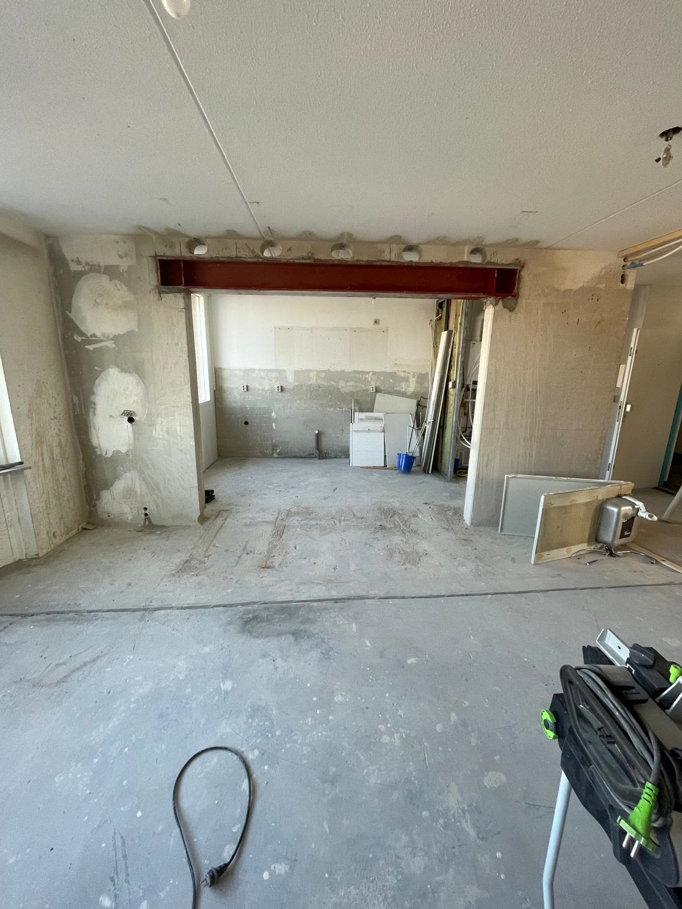
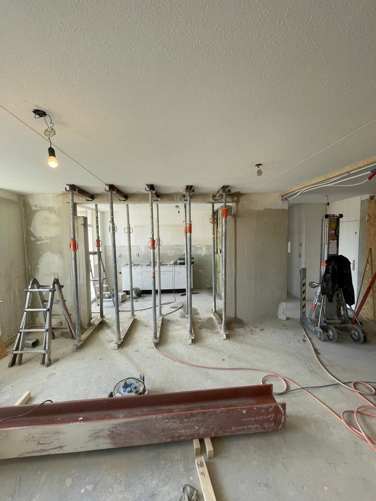
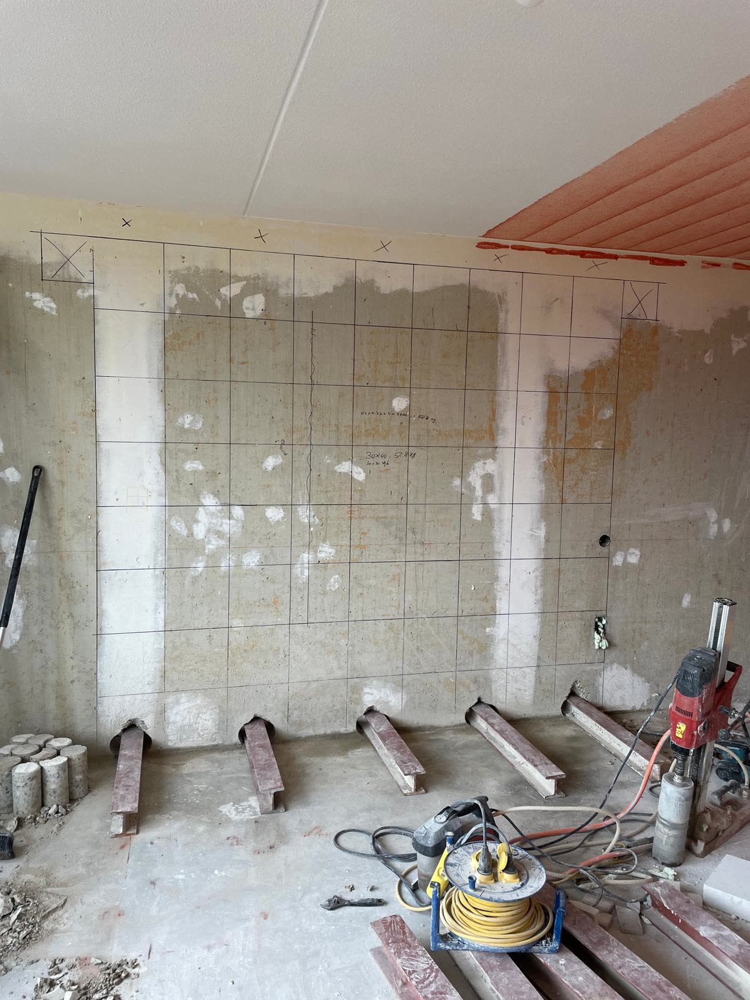

Doorbraak keuken en woonkamer
Betonnen draagwand naar de keuken. Gestut met naaldbalken door de wand, in blokken gezaagd en vervangen door een stalen ligger over de volle breedte.
Eén team dat rekent, tekent, de vergunning regelt, het staal zet en de wand strak oplevert. Je krijgt vooraf één prijs en één planning.
De meeste partijen doen één stukje: alleen de berekening, of alleen het zagen. Wij doen het traject van begin tot eind, met eigen mensen.
We tekenen de bestaande en de nieuwe situatie, klaar voor de gemeente.
Onze eigen constructeur rekent de doorbraak door volgens de Eurocode.
Wij dienen de aanvraag in en handelen vragen van de gemeente af.
Stutten, zagen, staal stellen en herstellen. Meestal in een paar dagen.
Gestuukt of geverfd. Je ziet niet meer dat er een muur stond.
Wil je zelf de afwerking doen of alleen berekening en uitvoering afnemen? Dat kan ook; je hoort vooraf precies wat elk deel kost.
Elke foto op deze site komt van een project van dit team. Schuif voor het verschil tussen voor en na.


Betonnen draagwand naar de keuken. Gestut met naaldbalken door de wand, in blokken gezaagd en vervangen door een stalen ligger over de volle breedte.


Dragende betonwand over vrijwel de volle kamerbreedte. Het zaagpatroon werd op de wand afgetekend, de wand ging er blok voor blok uit en de blokken gingen per ladderlift rechtstreeks de container in.
De kracht van dit team is de combinatie: de constructeur die rekent en de aannemer die uitvoert werken hier onder één naam.
Aannemer en specialist in betonzagen en boren. Jordy stut, zaagt, stelt het staal en bouwt af. Sinds 2019 met eigen bedrijf, thuis in de Betuwe.
Constructeur, afgestudeerd aan de TU Eindhoven. Simon rekent elke doorbraak door volgens de Eurocode en zet zijn handtekening onder de berekening die naar de gemeente gaat.
Nee. Voor het doorbreken van een dragende muur is vrijwel altijd een omgevingsvergunning nodig, met een constructieberekening die aantoont dat je huis veilig blijft. Wij verzorgen beide, dus je hoeft zelf niets met de gemeente te regelen.
Dat hangt af van de overspanning en van wat er op de muur draagt. Reken op enkele duizenden euro's voor het complete traject. Bij elk project op deze site staat het echte bedrag, zodat je kunt vergelijken met een situatie die op de jouwe lijkt.
De uitvoering zelf duurt meestal twee tot vijf werkdagen, inclusief herstelwerk. Daarvoor zit de papierwinkel: tekening, berekening en de vergunningsprocedure van de gemeente. Je krijgt vooraf één planning voor het geheel.
Ja. Heb je al een aannemer, dan leveren we tekening en berekening. Ligt er al een goedgekeurde berekening, dan voeren we uit. Het totaalpakket is er voor wie er geen omkijken naar wil hebben.
Stuur je gegevens en een korte omschrijving. Je hoort binnen één werkdag van ons, met een concreet voorstel of de vragen die we nog hebben.
Tip: stuur alvast een paar foto's mee. De muur zelf, de ruimte erboven en, als je die hebt, een plattegrond. Daarmee kunnen we meteen serieus rekenen.